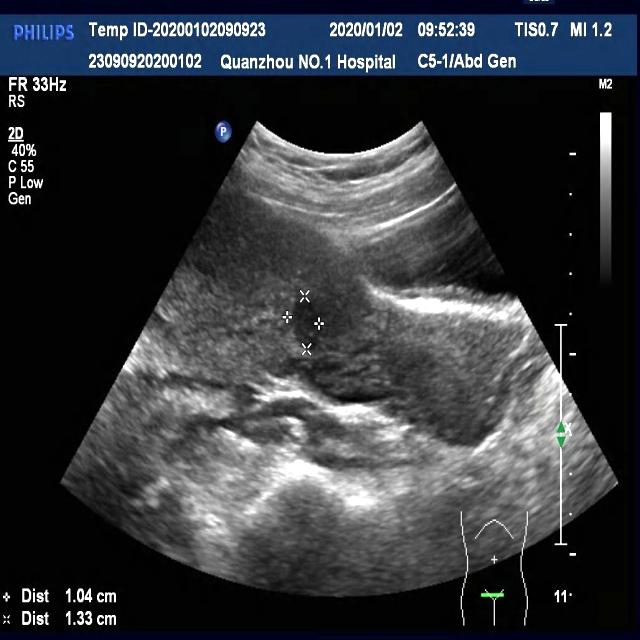
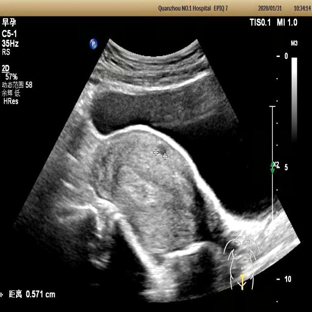
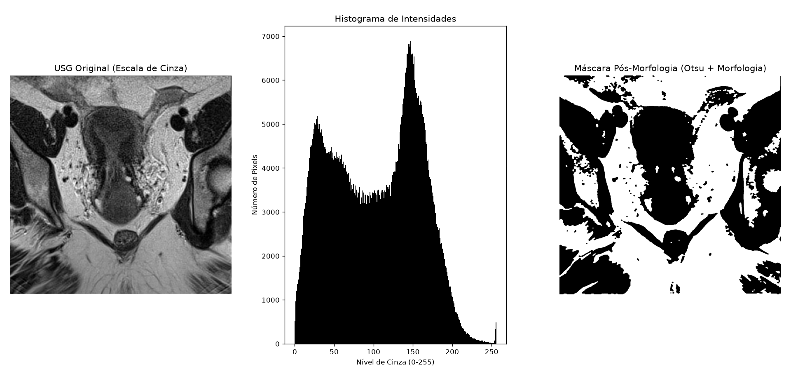

Pipeline computacional de visão para auxílio à segmentação de miomas uterinos em exames de ultrassonografia
ComeçarFMU | FIAM-FAAM
Centro Universitário FMU
Processamento de Imagem e Sinais (PIS)
Período: 2026.2
Anny Olivedo — RA: 2025201898
Carla Mariani — RA: 2025206873
André Navarro — RA: 2025200261
Danilo Marques — RA: 2025205065
Para validar o pipeline de visão computacional em cenários reais da saúde pública brasileira, incorporamos recortes e amparos analíticos baseados em diretrizes e bases de dados abertas do Sistema Único de Saúde (SUS) e repositórios clínicos parceiros.

Exame evidenciando áreas de alteração ecográfica compondo quadro de miomatose uterina.
Fonte: Rede Pública / DATASUS / SIA/SIH

Exame de referência sem presença de miomas, utilizado para calibração de falsos positivos.
Fonte: Acervo Estatístico SUS / Ministério da Saúde
| Parâmetro Técnico | Especificação Utilizada | Justificativa Acadêmica |
|---|---|---|
| Modalidade | Ultrassonografia Pélvica / Ginecológica | Exame de rotina para identificação de ecogenicidade tecidual. |
| Formato | PNG (Canal Único / Escala de Cinza) | Preservação fiel dos níveis de reflexão e atenuação acústica. |
| Resolução | 884 x 896 pixels | Grade espacial otimizada para amostragem segura das estruturas. |
| Profundidade | 8 bits (256 tons de cinza) | Dinâmica ideal para distinguir o miométrio do tecido miomatoso. |
O algoritmo implementado no script principal (main.py) executa o fluxo sequencial de processamento:
Leitura da imagem ultrassonográfica em matriz de intensidade única.
Mapeamento estatístico da distribuição dos tons de cinza.
Aplicação de filtro Gaussiano para atenuação do ruído granulado (speckle).
Cálculo automático do limiar ótimo de separação de classes.
Operações de Abertura e Fechamento para refinamento e limpeza da máscara binária.
Cruzamento métrico de similaridade (Dice / IoU) com a referência padrão.
Versão 3.14+
Processamento de imagem e matrizes
Computação científica e operações matriciais
Plotagem de histogramas e exibição de máscaras
Clone o repositório e instale as dependências necessárias executando os comandos abaixo no seu terminal:
# 1. Instalar bibliotecas essenciais
python -m pip install opencv-python scipy numpy matplotlib
# 2. Executar o script principal
python main.py
Visualização integrada do pipeline: USG Original, Histograma de Intensidades e Máscara Pós-Morfologia.
